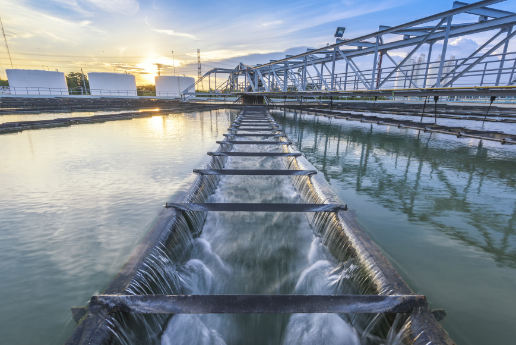

Utilisation et traitement de l'eau potable,
Une ressource inégalement disponible
La planète terre, l'environnement et l'action humaine
Bonjour et bienvenue sur notre site !
Nous allons traiter ce sujet sous forme de différentes parties: Cliquez sur un titre pour y aller
